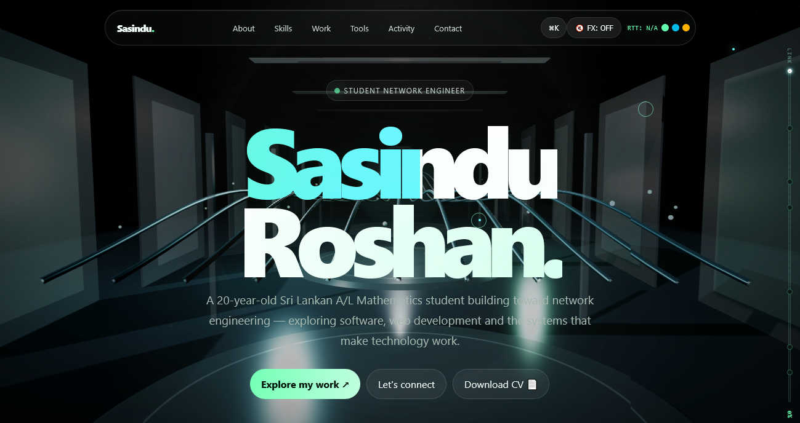

Studio Sites.
A portfolio built to make a Sri Lankan A/L student's path toward network engineering legible to recruiters and collaborators — before a single conversation happens.

The brief.
Most student portfolios read like a resume with a header font swapped in. This one needed to do something harder: signal a specific direction — network and cloud engineering — to an audience of recruiters and collaborators who'd give it maybe four seconds before deciding whether to keep reading.
The aesthetic had to argue the case before the copy did.
Aesthetic direction
A dark, server-rack-and-fiber visual language with a mint-teal gradient wordmark — the kind of palette that reads "infrastructure" instantly, without a single icon of a router.
Interface as signal
A ⌘K command palette and a live "RTT / FX" status readout in the nav aren't just decoration — they're small, specific details that a technically literate visitor recognizes and reads as credibility.
Honest positioning
The hero states the reality plainly — a 20-year-old A/L Mathematics student building toward the field — rather than overstating experience. Confidence without inflation reads better to the people actually hiring.
The approach.
Three clear calls to action — Explore the work, Let's connect, Download CV — cover the three things a visitor actually wants to do, in the order they're most likely to want them. Nothing is buried behind a hover state or a second click.
The navigation itself (About, Skills, Work, Tools, Activity, Contact) is scoped tightly to what a recruiter is scanning for, rather than padded out with sections that exist only to make the site look bigger.